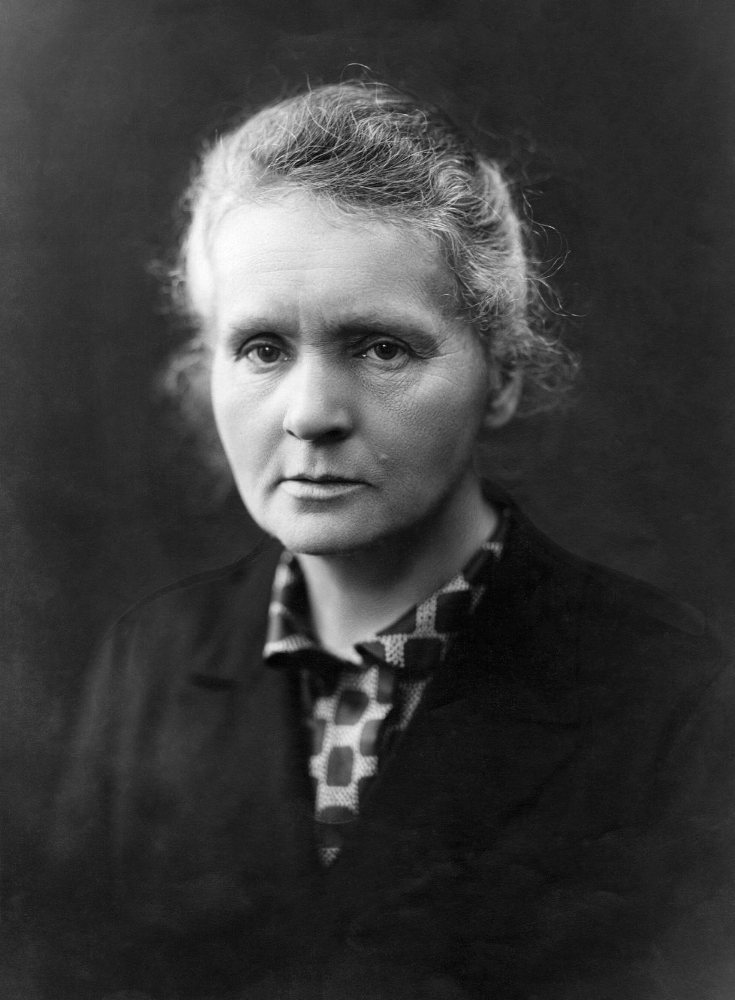

What Radioligand Therapy Is, and Why a Second Lutathera Matters
SEPTEMBER 17, 2026

On September 14 the FDA approved a drug called Bexlutry — chemically, lutetium Lu 177 dotatate — for adults with somatostatin-receptor-positive gastroenteropancreatic neuroendocrine tumours, "including foregut, midgut, and hindgut neuroendocrine tumors" [1]. If that molecule name sounds familiar it is because it is the same one Novartis has sold since January 2018 as Lutathera. Bexlutry is the first FDA-cleared copy of a radioligand therapy — the first "radioligand equivalent," in the agency's phrase — and it comes from Curium, a company most people outside nuclear medicine have never heard of [1] [2]. So the question I wanted answered is really three questions: what is a radioligand therapy, what does the evidence say this one actually does for the people who get it, and why did it take eight years and a patent trial to get a second one on the shelf?
What is a radioligand therapy?
A radioligand is a molecule with two ends. One end is a ligand — a small piece that binds to a specific protein on the surface of a cell. The other is a radioactive atom, held on by a chemical cage called a chelator. Inject it, and the ligand finds its protein wherever that protein is in the body, dragging the radioactive atom along with it. The atom then decays where it sits, and the radiation it gives off damages the cells within a couple of millimetres. It is radiotherapy that travels to the tumour rather than being aimed at it from outside — which is why it works on cancer that has spread to a dozen places at once.
In lutetium Lu 177 dotatate the three parts are literal. Dotatate is a synthetic cousin of somatostatin, a hormone whose receptors are unusually common on the surface of neuroendocrine tumour cells; the DOTA part is the cage; and lutetium-177 is the atom, a beta emitter with a half-life of about 6.6 days. That half-life is the whole logistics problem of the field. You cannot make a batch and put it on a shelf: roughly a tenth of the dose is gone every day from the moment it is made, so every vial is manufactured to order and shipped against a clock [3]. Keep that in mind for the business half of this, because it is why "a generic" of a radiopharmaceutical is not like a generic of a blood-pressure pill.
Neuroendocrine tumours themselves are uncommon but not rare, and getting less rare. A 2017 analysis of the US SEER cancer registries found the age-adjusted incidence had risen 6.4-fold between 1973 and 2012, to about 7 new cases per 100,000 people a year, with roughly 171,000 Americans living with one in 2014 [4]. Most of that rise is better scanning finding tumours that used to go unnoticed; some of it is real. They grow slowly as cancers go, and many of them carry the somatostatin receptor, which is what makes them a target you can aim a ligand at.
Does lutetium Lu 177 dotatate work? What the trials found
Bexlutry did not run a new efficacy trial. Under the FDA's 505(b)(2) pathway it was allowed to lean on the published evidence for Lutathera, plus "targeted bridging data" showing the two products have the same biological and chemical profile [1]. So the question "does Bexlutry work?" is, for practical purposes, the question "did Lutathera's trials hold up?" There are three that matter.
NETTER-1 (2017) was the trial that got the drug approved. It randomised 229 people with advanced midgut neuroendocrine tumours that were still growing despite standard somatostatin-analogue treatment. Half got four doses of lutetium-177 dotatate eight weeks apart plus ordinary-dose octreotide; the other half got high-dose octreotide alone. At 20 months, 65% of the radioligand group were alive without their disease progressing, against 11% of the control group — a hazard ratio for progression or death of 0.21 — and 18% had a measurable tumour response versus 3% [5]. That is an enormous difference for a cancer drug, and it is the number the whole field was built on.
The survival result is more sobering, and it is the one a careful reader should hold onto. In the final analysis, published in 2021 after a median follow-up of more than six years, median overall survival was 48.0 months with the radioligand versus 36.3 months without — nearly a year longer — but the hazard ratio was 0.84 with a confidence interval of 0.60 to 1.17, and the difference was not statistically significant (p=0.30) [6]. Part of the reason is that 36% of the control patients went on to get radioligand therapy themselves once the trial allowed it, which blurs any survival comparison. But the honest statement is: the drug reliably delays progression by a wide margin, and probably extends life, and the trial was not able to prove the second part.
NETTER-2 (2024) moved the drug earlier. It randomised 226 people with newly diagnosed, higher-grade (grade 2 and 3) tumours — people who had not yet had any treatment — to lutetium-177 dotatate plus octreotide, or high-dose octreotide alone. Median progression-free survival was 22.8 months against 8.5 months (hazard ratio 0.28), and 43% had a tumour response versus 9% [7]. Survival data from that trial are still maturing.
The third study is the one the Bexlutry label leans on for safety: the Dutch ERASMUS series, a single hospital's record of 1,214 people treated with the same molecule between 2000 and 2012 — no control group, so it says nothing about efficacy that the randomised trials don't say better, but a great deal about what happens to the bone marrow and kidneys over years [8]. In the version cited on the new label: 2% of patients developed myelodysplastic syndrome, 0.5% developed acute leukaemia, and under 1% developed kidney failure [1]. In NETTER-1, low blood counts were common — anaemia in 81% of the treated group versus 54% of controls, low platelets in 53% versus 17% [1]. The treatment is given with an amino acid infusion before, during and after each dose specifically to protect the kidneys, and the label warns about radiation exposure, marrow suppression, secondary blood cancers, kidney and liver toxicity, and a "neuroendocrine hormonal crisis" the tumour can trigger when it is hit [2]. None of that is new; it is Lutathera's label with a different name at the top.
What the evidence says. For somatostatin-receptor-positive gastroenteropancreatic neuroendocrine tumours, lutetium Lu 177 dotatate — whether the vial says Lutathera or Bexlutry — is one of the best-supported drugs in its corner of oncology: two randomised trials of 229 and 226 people, a roughly threefold to fourfold cut in the rate of progression, and tumour shrinkage in a fifth to two-fifths of patients depending on the setting. What it has not proved, in six years of follow-up, is a statistically significant survival gain, partly because control patients crossed over. The price is a measurable, small, long-term risk of secondary blood cancer (about 2–3% combined for MDS and leukaemia in the largest series) and a routine of low blood counts during treatment. Bexlutry adds no new efficacy evidence of its own; its claim is equivalence, and the FDA accepted it.
Why did it take a courtroom to get a second one?
Lutathera was developed by a French company, Advanced Accelerator Applications, which Novartis bought in a deal announced in late 2017 for about $3.9 billion. It has been a quietly excellent purchase. Novartis's own 2025 accounts put Lutathera at $816 million in net sales for the year, up 13%, with $147 million of the fourth quarter's $203 million coming from the United States alone [9]. Its sibling Pluvicto — the same idea aimed at prostate cancer — did $2.0 billion [9]. Radioligand therapy is now a franchise, and the same report notes, drily, that "Novartis is in patent litigation with manufacturers having FDA applications referencing Lutathera" [9]. That sentence is this story.
Two companies had filed. Lantheus, a Massachusetts imaging company, had a true generic (an ANDA) called PNT2003 that the FDA tentatively approved on March 2, 2026 — tentative because a 30-month litigation stay under the Hatch-Waxman rules blocked a final decision until June [10]. Curium had gone the 505(b)(2) route with its own branded version. Novartis's subsidiary sued both over four patents listed in the FDA's Orange Book for Lutathera, covering how the product is made.
The case went to a five-day bench trial in Delaware last December. On June 17, 2026, Judge Maryellen Noreika ruled all four patents invalid — not because the inventions weren't real, but because the claimed inventions "had been on sale more than one year before the patents' effective filing dates" [11]. In plain English: Novartis had been selling Lutathera for years and only then filed patents on how it was made, and US law gives you one year from the first sale to do that, not six. The court also found Curium's product did not infringe the claims at all [11]. Three months later, the FDA approved Bexlutry. Curium says it is "now available for prescribing physicians and patient use" [1].
It is worth noticing who didn't get approved. ITM, a German company with a genuinely new somatostatin-targeting radioligand (¹⁷⁷Lu-edotreotide, which beat the standard drug everolimus in its own phase 3 trial), received a complete response letter from the FDA on August 7 — over manufacturing and a third-party facility, not over the clinical data [12]. So the new molecule is waiting on a factory, while the copy of the eight-year-old one reached patients first. In a field where the product decays 10% a day, the factory is not a detail; it is the product.
The companies
Curium is private. It was assembled in 2017 by the investment firm CapVest, which is still its controlling shareholder, out of two older nuclear-medicine businesses, and it describes itself as a company of more than 3,800 people, 45-plus products, four manufacturing sites and customers in over 70 countries [1]. Until this week its business was overwhelmingly diagnostic isotopes — the tracers used in scans — and its own chief executive, Renaud Dehareng, called the approval "a defining milestone for Curium as we expand our offering into oncology therapeutics" [1]. Its North American chief, Mike Patterson, made the logistics argument out loud: "As the only vertically integrated, lutetium-based NETs therapy manufacturer, Curium is uniquely positioned" [1] — meaning it makes its own lutetium rather than buying it, which in a 6.6-day-half-life business is the moat.
Two more facts about Curium turn a drug story into a deal story. In November 2025 CapVest recapitalised the company through a continuation fund at a valuation of about $7 billion, which it called the largest transaction in nuclear medicine [13]. And on August 3, 2026 — six weeks after the Delaware ruling and six weeks before the approval — Curium agreed to buy Lantheus (Nasdaq: LNTH), the other company that had just beaten Novartis in court, for $102.50 a share in cash plus a contingent right worth up to $12 more, up to $8.0 billion in all, expected to close in the first half of 2027 subject to shareholder and regulatory approval [14]. If it closes, both same-molecule challengers to Lutathera — the branded Bexlutry and the tentatively-approved generic PNT2003 — end up under one roof, alongside Lantheus's Pylarify, the leading prostate-cancer PET tracer. A market that had one seller of this molecule for eight years is about to have two, and the two are merging. Somewhere an antitrust lawyer just sat up.
Novartis (NYSE: NVS), for its part, keeps the brand, the installed base of treatment centres, and a 2028 phase 3 readout in the pipeline for Lutathera in a broader GEP-NET population [9]. What it loses is the monopoly price. Lutathera's list price has been reported at about $56,000 per dose, with a standard course of four doses [15]. Curium has not published a price for Bexlutry, and I would not assume the discount is deep: a radiopharmaceutical copy still has to be made to order and flown to the hospital, and the FDA's own language — a "radioligand equivalent," not a generic — tells you the agency thinks of it as a second brand. Whether hospitals treat it as one is the next number to watch.
Where the evidence is weak
Three honest gaps. First, equivalence is inferred, not tested in patients — the bridging data compares the chemistry and biology of the two products; nobody randomised people to Bexlutry versus Lutathera, and nobody will. That is normal for a 505(b)(2) approval and it is also true of every generic you have ever taken; I note it because the field is new enough that this is the first time it has been done. Second, the survival question is still open after six years, for the crossover reason above. Third, the long-term secondary-cancer numbers come from a series in which people were treated up to twenty-five years ago at doses and schedules that were still being worked out; the modern risk may be lower, or may simply not have had time to show.
What I'd do. I am not a patient here and I won't pretend to be one. But if I were reading this because someone I love has one of these tumours, the thing I would take to the appointment is the NETTER-1 progression curve and the question of whether the centre treating them can now get either product, and at what cost — because as of this week, for the first time, that is a question with more than one answer.
Sources
- Curium. Curium announces FDA approval of BEXLUTRY lutetium Lu 177 dotatate injection for adults with SSTR-positive GEP-NETs. Press release, 14 September 2026. globenewswire.com
- CancerNetwork. FDA Approves Lutetium Lu 177 Dotatate Injection for GEP-NETs. 14 September 2026. cancernetwork.com
- BioPharma Dive. FDA clears first generic radioligand drug. 15 September 2026. biopharmadive.com
- Dasari A, Shen C, Halperin D, et al. Trends in the Incidence, Prevalence, and Survival Outcomes in Patients With Neuroendocrine Tumors in the United States. JAMA Oncology, 2017. doi:10.1001/jamaoncol.2017.0589
- Strosberg J, El-Haddad G, Wolin E, et al. Phase 3 Trial of ¹⁷⁷Lu-Dotatate for Midgut Neuroendocrine Tumors (NETTER-1). New England Journal of Medicine, 2017. doi:10.1056/NEJMoa1607427
- Strosberg JR, Caplin ME, Kunz PL, et al. ¹⁷⁷Lu-Dotatate plus long-acting octreotide versus high-dose long-acting octreotide in patients with midgut neuroendocrine tumours (NETTER-1): final overall survival and long-term safety results. Lancet Oncology, 2021. doi:10.1016/S1470-2045(21)00572-6
- Singh S, Halperin D, Myrehaug S, et al. [¹⁷⁷Lu]Lu-DOTA-TATE plus long-acting octreotide versus high-dose long-acting octreotide for the treatment of newly diagnosed, advanced grade 2–3, well-differentiated, gastroenteropancreatic neuroendocrine tumours (NETTER-2). Lancet, 2024. doi:10.1016/S0140-6736(24)00701-3
- Brabander T, van der Zwan WA, Teunissen JJM, et al. Long-Term Efficacy, Survival, and Safety of [¹⁷⁷Lu-DOTA⁰,Tyr³]octreotate in Patients with Gastroenteropancreatic and Bronchial Neuroendocrine Tumors (the ERASMUS series). Clinical Cancer Research, 2017. doi:10.1158/1078-0432.CCR-16-2743
- Novartis. Fourth Quarter and Full Year 2025 Condensed Interim Financial Report — net sales by product (Lutathera USD 816 m FY2025 vs 724 m FY2024; Pluvicto USD 1,994 m) and the litigation note. novartis.com (PDF)
- Lantheus. Lantheus Receives FDA Tentative Approval for Lutetium Lu 177 Dotatate (PNT2003), Radioequivalent to LUTATHERA. Press release, 2 March 2026. globenewswire.com
- AuntMinnie. Curium, Lantheus win patent dispute over lutetium-177 dotatate products (Advanced Accelerator Applications v. Curium/Lantheus, D. Del., Noreika J., 17 June 2026). auntminnie.com
- ITM Isotope Technologies Munich. ITM Receives Complete Response Letter for ¹⁷⁷Lu-edotreotide (ITM-11). Press release, 10 August 2026. globenewswire.com
- CapVest / Curium. CapVest recapitalises Curium to accelerate its growth strategy, marking the largest transaction in nuclear medicine globally. 20 November 2025. curiumpharma.com
- Curium / Lantheus. Curium Announces Definitive Agreement to Merge with Lantheus. 3 August 2026. curiumpharma.com
- Managed Healthcare Executive. FDA Approves Lutathera for Adolescents with Neuroendocrine Tumors — reports a wholesale acquisition cost of $55,896 per dose, about four doses per course. 2024. managedhealthcareexecutive.com
This is one reader's reading of the research, not medical advice. If something here touches on your own health, take it to a clinician who knows you — and read how these entries are put together.